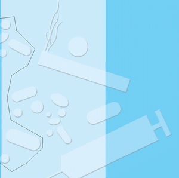

Je nach Drogeneinnahme erzielt man entweder eine stimulierende, aufputschende oder eine dämpfende Wirkung. Aber auch Negativwirkungen wie Horrortrips können auftreten.
Bedenkt man die Wirkung illegaler Drogen auch noch Tage nach deren Konsum (Echo-Rausch oder "Flashback"), wird die Gefahr für die Arbeitssicherheit, insbesondere an gefahrgeneigten Arbeitsplätzen wie auf dem Gerüst, deutlich.
Auch die pflanzlichen Drogen sind nicht weniger gefährlich. Extrakte und Pflanzenteile aus Nachtschattengewächsen wie Engelstrompete, Stechapfel oder Tollkirsche können zu Halluzinationen und Psychosen führen. Das gleiche gilt für "Psillos", die aus giftigen Pilzarten gewonnen werden.
| Cannabis-Produkte (Haschisch, Marihuana) | |
| LSD | |
| Kokain/Crack | |
| Synthetische Drogen (Amphetamine, Designerdrogen wie Ecstasy) | |
| Opiate | |
| Schnüffelstoffe |
